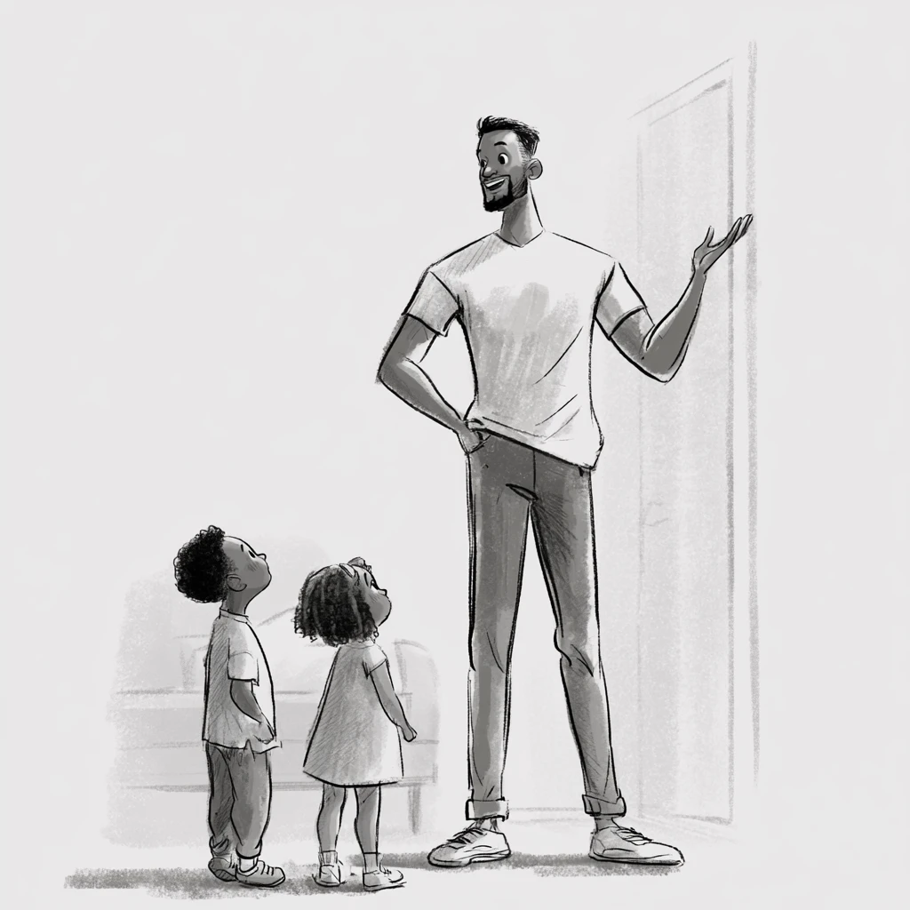

HomeIssue 001 · Page 38
Ten minutes · costs nothing
Give them
the tour.
Your kids do not know which parts of your home matter. They will not know until you tell them.
So walk them around it. Stop in five spots. At each one, say one true thing that happened there.
- “This is the door we brought you home through.”
- “This is where Grandma always sat.”
- “This is the wall we painted the wrong color.”
- “This is where we ate when there was not much.”
That is the whole thing. Ten minutes. They will keep it for years.
A place is just a place until someone tells you what happened there.
“When your children ask you what these stones mean, tell them.”
— Joshua 4:21–22
HomePage 38
Where to stop
Five spots. Any house has them.
- 01
A door
Who came through it? - 02
A window
What did you watch from here? - 03
The table
What got decided here? - 04
A corner nobody uses
Why is it still there? - 05
Outside
Turn around. Look at the house.
You do not need a story for all five. One is enough.
No house?
Do it with a car. A street. A school. Any place you have been more than once.
Fill this inPage 38
Your tour
Write it down so they still have it when you are not there to say it.
Cut this out. Put it on the fridge.
Quarter page